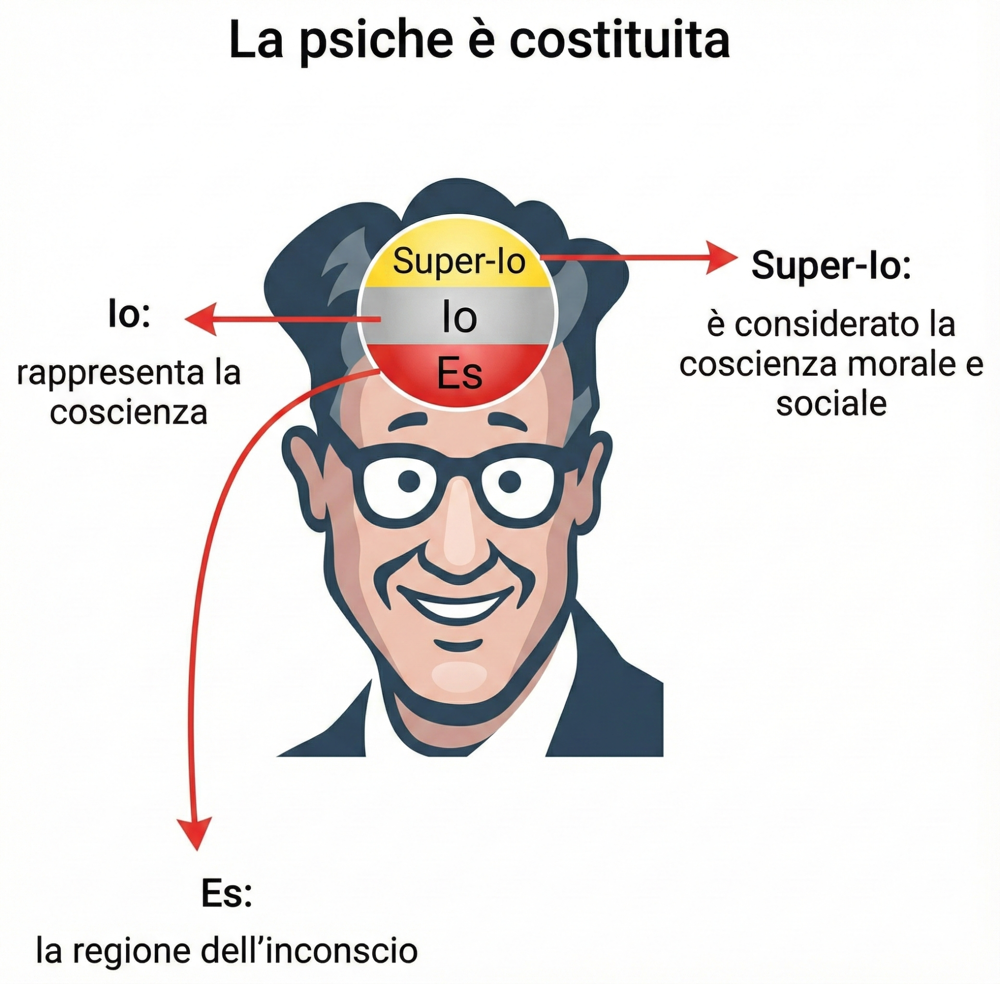
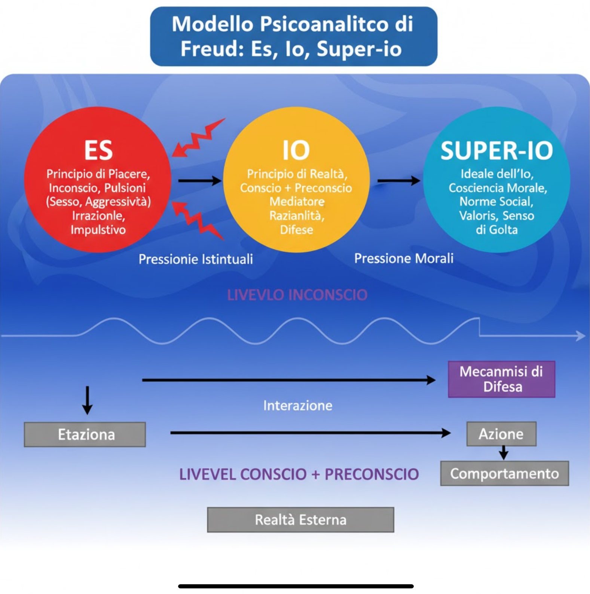
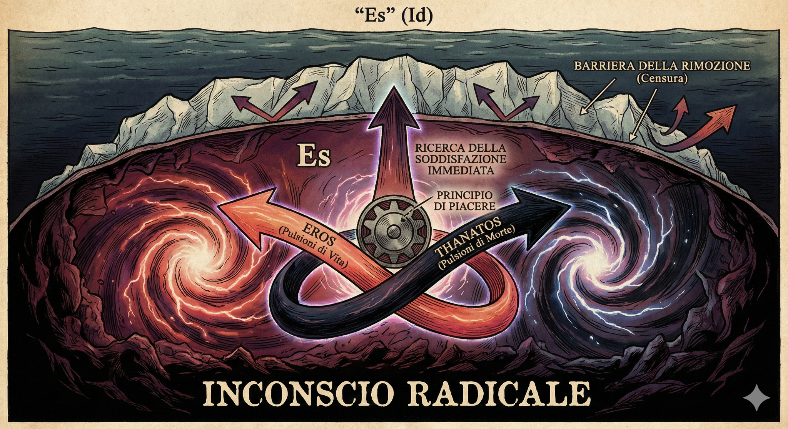
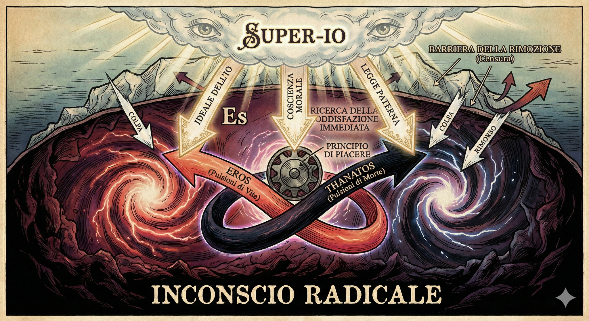
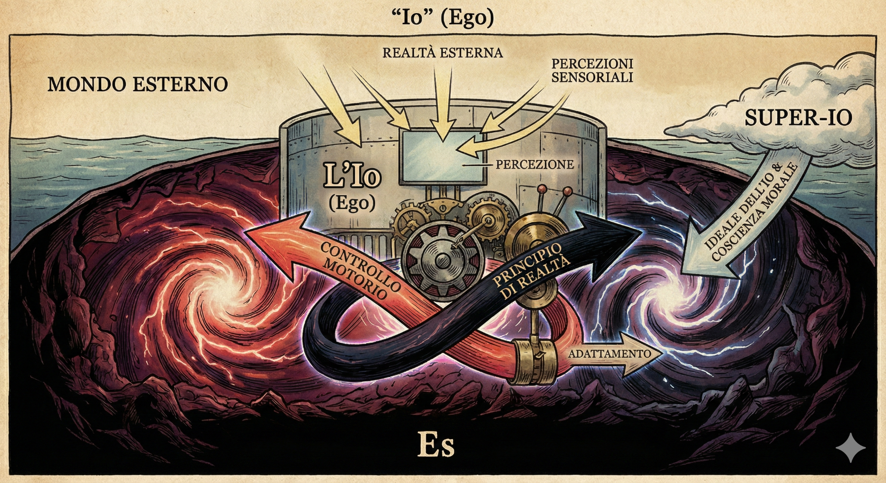
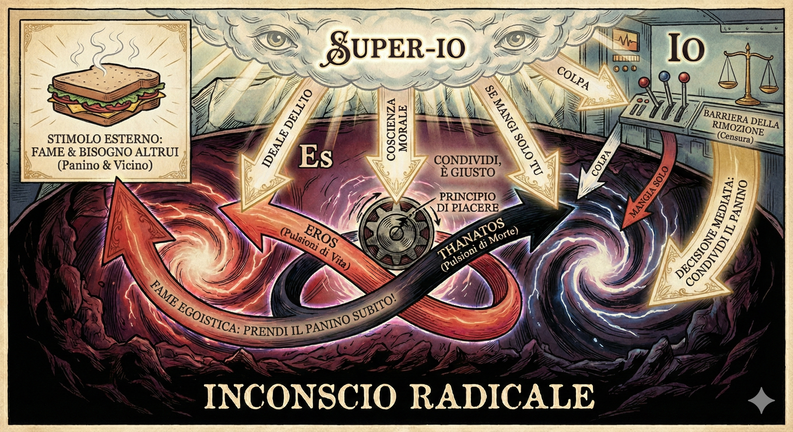
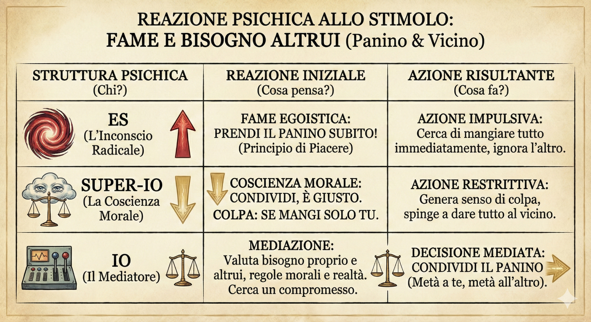

La psiche come sistema: Es, Io e Super-Io
Per Freud la psiche non è un blocco unico, ma un sistema dinamico composto da tre istanze che dialogano e si scontrano continuamente: Es, Io e Super-Io.

Le tre istanze in breve
- Es: è la regione dell'inconscio, sede delle pulsioni di vita (Eros) e di morte (Thanatos). Funziona secondo il principio di piacere: cerca la soddisfazione immediata dei bisogni.
- Io: rappresenta la coscienza e il contatto con la realtà. Media tra le richieste dell'Es, i divieti del Super-Io e le condizioni del mondo esterno. Funziona secondo il principio di realtà.
- Super-Io: è la coscienza morale e sociale. Incorpora le regole, le norme e gli ideali interiorizzati (genitori, educatori, cultura) e genera sentimenti di colpa e rimorso quando le infrangiamo.
Dal modello "ordinato" al magma dell'inconscio
I manuali spesso mostrano Es, Io e Super-Io come tre cerchi colorati in fila. Le immagini artistiche che useremo in questa pagina, invece, provano a rendere l'idea di forze in movimento: vortici, frecce, luce dall'alto. È un modo visivo per ricordare che la psiche freudiana è un conflitto continuo, non un diagramma statico.

L'inconscio radicale: sotto la superficie
Freud paragona spesso la psiche a un iceberg: la parte visibile (consapevole) è piccola rispetto alla massa nascosta. Le immagini che seguono traducono questo modello in una scena quasi mitologica: vortici, montagne, nuvole giudicanti.

Vortici di energia pulsionale (Eros e Thanatos) spingono verso la soddisfazione immediata dei bisogni.

Dall'alto, come un cielo giudicante, scendono frecce di ideali, leggi, colpa e rimorso.

Una sorta di cabina di controllo che riceve percezioni dal mondo esterno, pressioni dall'Es e richiami morali dal Super-Io.
In queste immagini l'inconscio radicale è rappresentato come un paesaggio sotterraneo in perenne agitazione. L'Io prova ad adattarsi, controllare i movimenti e mantenere un minimo di equilibrio.
Es, Io e Super-Io in azione: l'esempio del panino
Per capire come funzionano Es, Io e Super-Io è utile un esempio quotidiano. Immagina di essere affamato. Davanti a te c'è un panino e accanto un tuo compagno che ha fame come te.


Reazione psichica allo stimolo: fame e bisogno altrui
Es – L'inconscio radicale
Reazione iniziale: fame egoistica. «Prendi il panino subito!». Qui agisce il principio di piacere: prima soddisfare il bisogno, il resto non conta.
Super-Io – La coscienza morale
Reazione morale: «Condividi, è giusto». Se mangi solo tu, nasce il senso di colpa. Il Super-Io spinge verso il rispetto delle regole e dell'altro.
Io – Il mediatore
L'Io valuta: ho fame io, ha fame il mio compagno, quali sono le regole del contesto? La decisione mediata è il compromesso: condividere il panino (metà a te, metà all'altro).
In una stessa persona convivono quindi impulso, coscienza morale e mediazione. Questo rende la scelta etica un vero campo di forze, non una semplice "voce della coscienza".
Video: capire Freud in pochi minuti
Il video seguente propone una spiegazione sintetica della teoria freudiana, utile come ripasso o per un primo incontro con questi concetti.
Vienna: la città di Freud
La psicoanalisi nasce a Vienna, dove Freud visse e lavorò per gran parte della sua vita. Qui incontrò i primi pazienti, sviluppò il metodo delle libere associazioni e scrisse le opere che hanno cambiato il modo di pensare l'inconscio.
Perché Vienna è importante
- Città dell'Impero austro-ungarico, crocevia di culture, lingue e tensioni sociali.
- Centro scientifico e medico all'avanguardia tra Otto e Novecento, scenario ideale per una nuova teoria della mente.
- Oggi Vienna ospita il Museo Freud nella casa-studio dove lo psicoanalista riceveva i pazienti.
Guardare la mappa non serve solo per "sapere dove" è Freud, ma per capire che ogni teoria nasce in un contesto storico e geografico preciso.
Vienna sulla mappa
La mappa mostra il centro di Vienna. Puoi spostarti e ingrandire per esplorare la città.